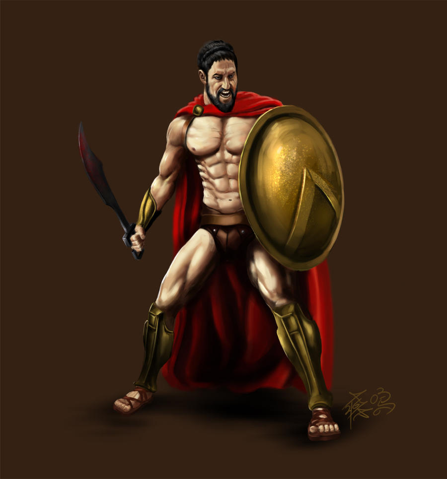

Leonidas of Sparta
Spartan

Leonidas of Sparta was a legendary king and warrior known for his leadership during the Battle of Thermopylae in 480 BCE. He belonged to the Agiad dynasty and was renowned for his military prowess and adherence to Spartan ideals of bravery and sacrifice. At Thermopylae, Leonidas led a small force, including 300 Spartans, against the vastly larger Persian army led by King Xerxes. Despite the inevitable defeat, his heroic stand became a symbol of courage and resistance, inspiring future generations. Leonidas's legacy continues to be celebrated in literature and popular culture.